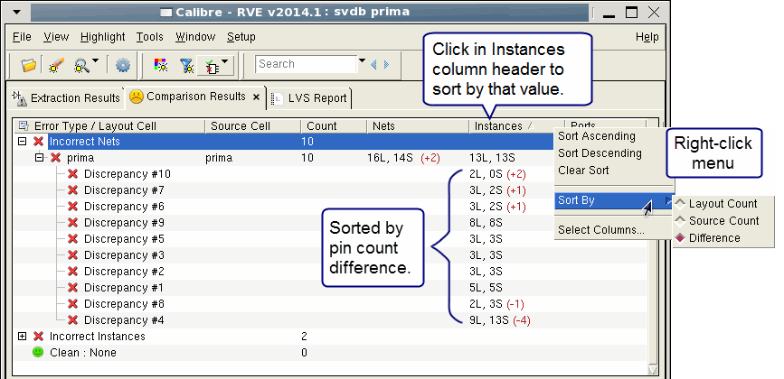

Calibre RVE for
LVS reports the number of pins connected to the nets involved in
a mismatched net discrepancy. Sorting by the number of connected
pins can help you decide which discrepancy to fix first.
Procedure
- Click the Comparison
Results tab.
- Enable View > Tree Options > View by Error Type.
- Expand the “Incorrect Nets”
listing in the tree view.
The entry in the Instances
column for each incorrect net discrepancy gives the number of connected
pins in the layout (L) and source (S) and the difference between
the two in parentheses. Pin counts are after any netlist and device
reduction performed by Calibre nmLVS.
(The entry in the Instances
column for each cell is
the number of instances in the layout and source and the difference
between the two.)
- Click in the Instances column
heading to sort by that value.
The default sorting is by the
difference value. Pin count values are only sorted within each cell,
not across cells.
- (Optional) Right-click in
the Instances column header and choose Sort
By to list by number of connected layout or source pins.
Results
Figure 1. Sorting Incorrect Net
Discrepancies by Connected Pin Count